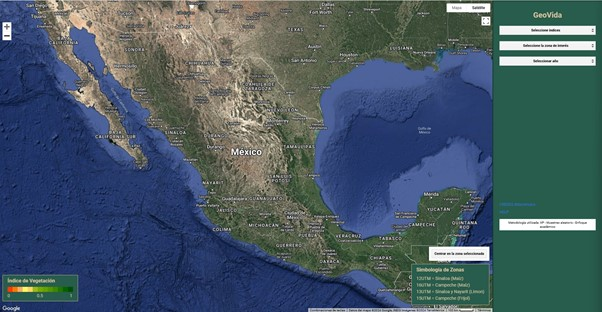
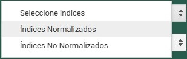
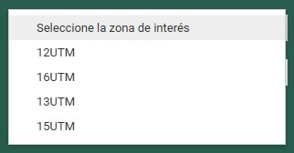
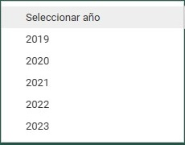
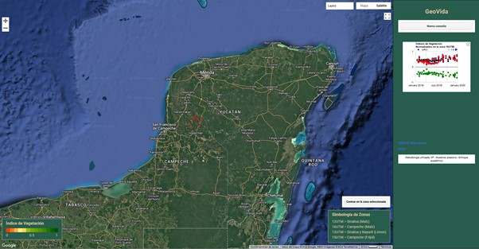
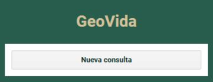

Manual de Usuario
Este manual está diseñado para guiarte paso a paso en el uso del Geoportal. De igual forma, se explicarán los elementos que se muestran en el Geoportal.
Interfaz de usuario
La interfaz del Geoportal es sencilla y fácil de utilizar. A continuación, te explicamos los elementos que contiene:
1. Vista principal del Geoportal
Se muestra una vista previa de la página y los elementos que contiene y que serviran de apoyo para el uso del geoportal.
2. Selección del índice
Se debe elegir si el índice será normalizado o no normalizado.
3. Selección de la zona de interés
Después, se selecciona una zona, como se muestra en la simbología disponible de los estados y los cultivos que se mostrarán.
4. Selección de un año
Se selecciona un año dentro del periodo 2019-2023, como se muestra en la lista desplegable.
5. Resultados
Después de haber ingresado los datos, esperamos a que carguen los resultados. Se muestra una pantalla similar a la imagen, que puede variar según la zona seleccionada y el año.
6. Nueva consulta
Para realizar una nueva consulta, solo damos clic en el botón que aparece sobre la gráfica.
